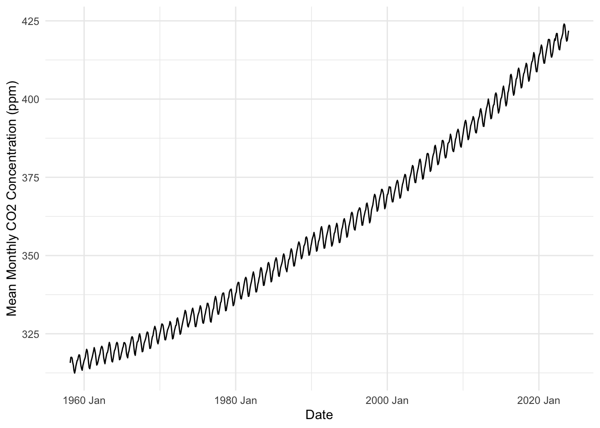
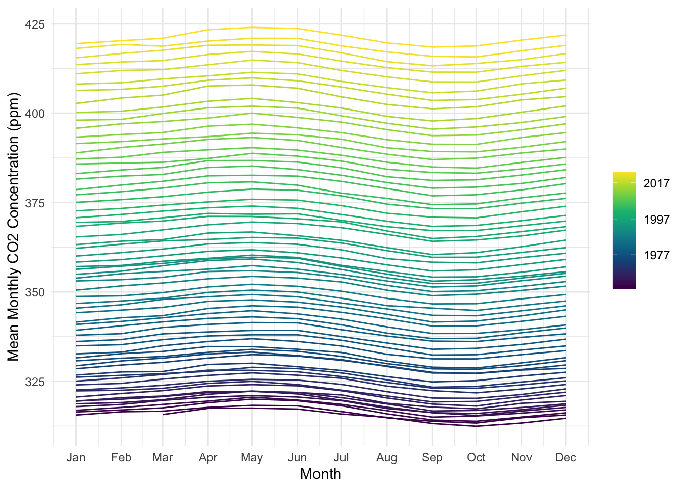
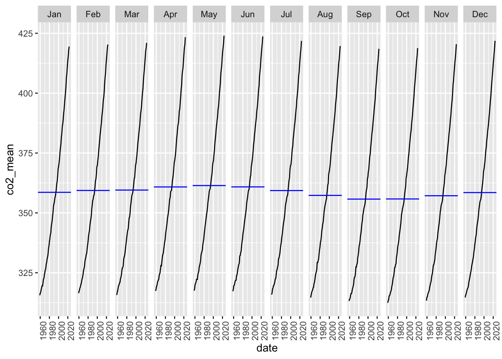
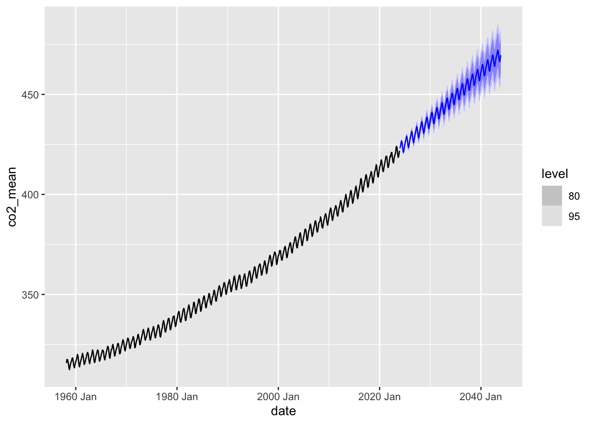
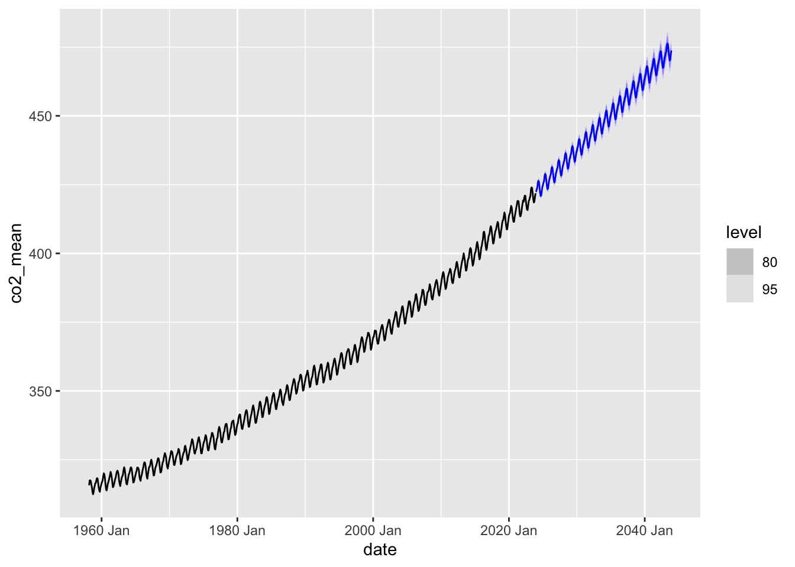
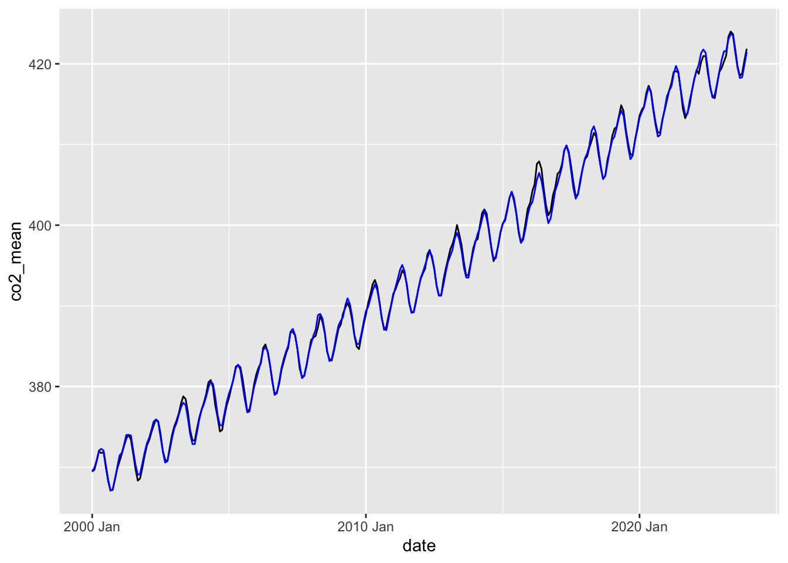
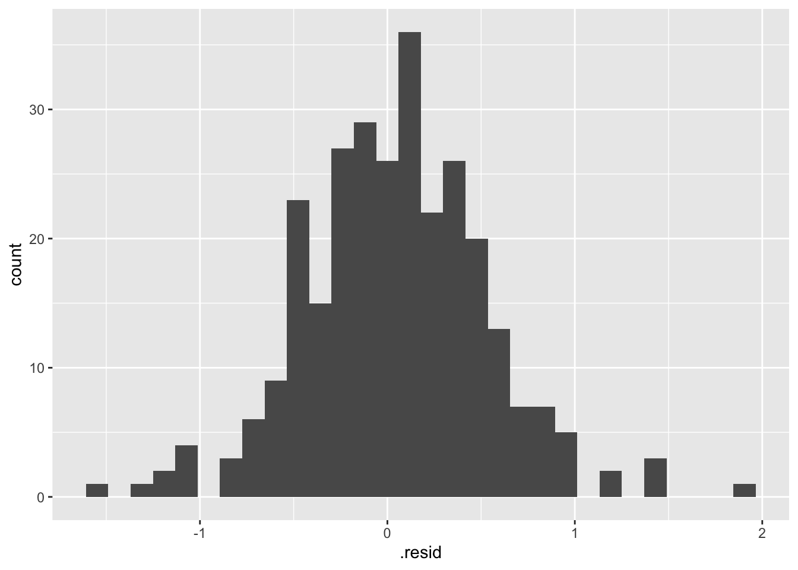
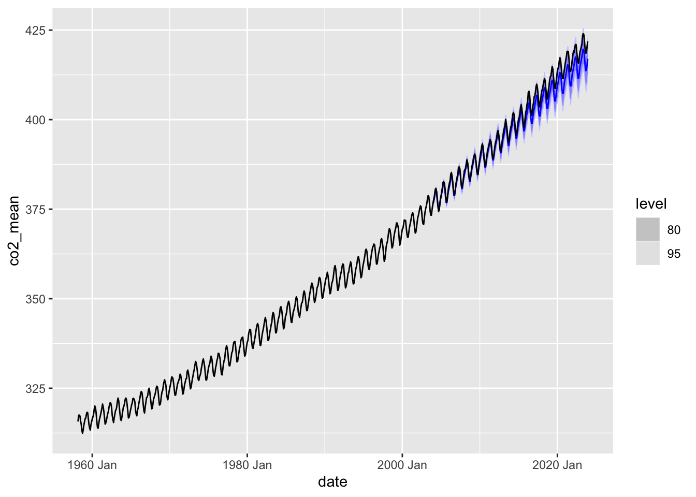

Code
library(tidyverse)
library(here)
library(tsibble) # for time series
library(feasts)
library(fable)library(tidyverse)
library(here)
library(tsibble) # for time series
library(feasts)
library(fable)co2_df <- read_csv(here('data/co2_mauna_loa.csv'))
# march 1958 through sept 2023
# monthly mean atmospheric co2 concentrationsco2_ts <- co2_df %>%
mutate(date = tsibble::yearmonth(date)) %>% # convert date column to yearmonth format
as_tsibble(index = date, # date will be our time series variable
key = NULL) # no key, since all obs from one locationggplot(co2_ts, aes(x = date, y = co2_mean)) +
geom_line() +
labs(x = 'Date', y = 'Mean Monthly CO2 Concentration (ppm)') +
theme_minimal()
co2_ts %>%
gg_season(y = co2_mean, pal = hcl.colors(n = 10)) + # gg_season from feasts package
labs(x = 'Month', y = 'Mean Monthly CO2 Concentration (ppm)') +
theme_minimal()
co2_ts %>%
gg_subseries(y = co2_mean) # from feasts package. breaks this data apart by month and year. 
Specify for each component, whether none (“N”), additive (“A”), or multiplicative (“M”)
### Create model
co2_fit <- co2_ts %>%
filter_index("2000 Jan" ~ .) %>% # forecast using data from 2000 onwards
model(ets = ETS(co2_mean ~ season(method = "A") + trend(method = "A")))
### Use model to forecast
co2_forecast <- co2_fit %>%
forecast(h = "20 years") # from fable package
## Plot forecast
co2_forecast %>%
autoplot(co2_ts) # plots on top of the time series data
### Create model
co2_fit <- co2_ts %>%
filter_index("2000 Jan" ~ .) %>% # forecast using data from 2000 onwards
model(ets = ETS(co2_mean ~ season(method = "M") + trend(method = "M")))
### Use model to forecast
co2_forecast <- co2_fit %>%
forecast(h = "20 years") # from fable package
## Plot forecast
co2_forecast %>%
autoplot(co2_ts) # plots on top of the time series data
co2_predicted <- co2_fit %>% # use your model
broom::augment()
### Plot and compare model to actual data
ggplot(co2_predicted) +
geom_line(aes(x = date, y = co2_mean)) + # this plots original data
geom_line(aes(x = date, y = .fitted), color = "blue") # this plots model on top
# looks like model fits historical data very well
### Look at residuals plot
resid_plot <- ggplot(co2_predicted, aes(x = .resid)) +
geom_histogram()
resid_plot # residuals look normally distributed around 0, likely indicates good fit
### Create model
co2_fit_past <- co2_ts %>%
filter_index(. ~ "2003 Dec") %>% # forecast using data only up to end of 2003
model(ets = ETS(co2_mean ~ season(method = "M") + trend(method = "M")))
### Use model to forecast
co2_forecast_past <- co2_fit_past %>%
forecast(h = "20 years") # from fable package
## Plot forecast
co2_forecast_past %>%
autoplot(co2_ts) # plots on top of the time series data
## Observations:
# When both season and trend are additive, model undershoots observed data (some uncertainty)
# When season is multiplicative and trend is additive, model slightly overshoots (high uncertainty)
# When both are multiplicative, model slightly undershoots (low uncertainty)In the exploratory plots, I noticed the upward trend in CO2 concentrations, along with the seasonal increase and decrease in C02 in each year. The seasonal plot helped me identify that these peaks corresponded to springtime (~ April through June) and the valleys corresponded to fall (~ September through October). Even though there are annual fluctuations, these are small in magniture compared to the overall increasing trend.
“In your ETS time series model, explain whether an additive or multiplicative model would make more sense, in terms of the relationship between carbon dioxide, humans, and environmental factors.” ?? Not sure how to decide whether additive or multiplicative is best. I want to say additive because seasonal variations remain approximately constant.